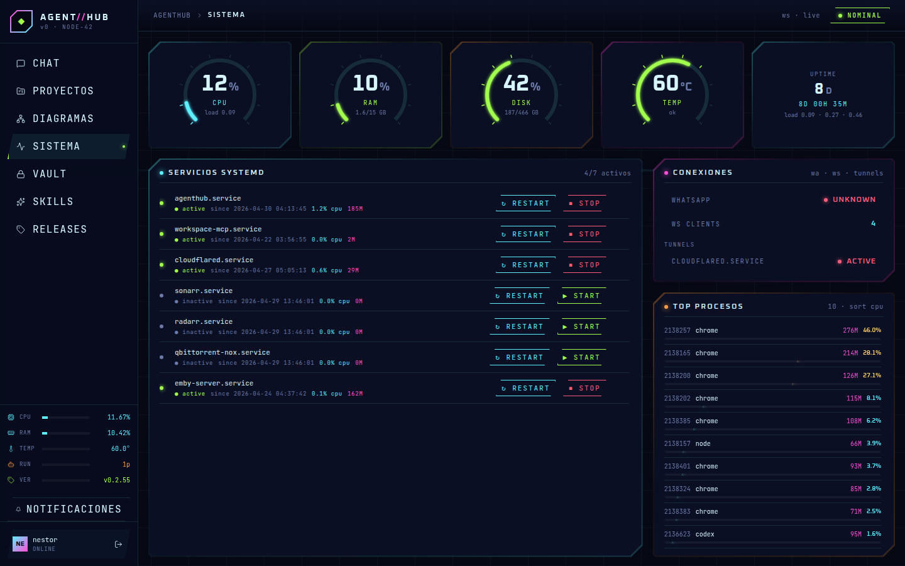
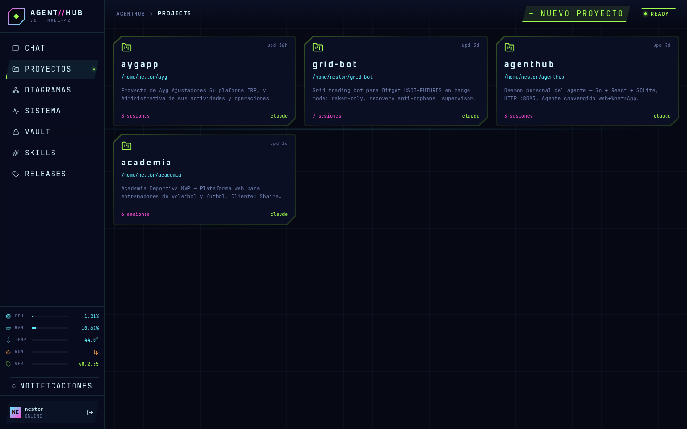
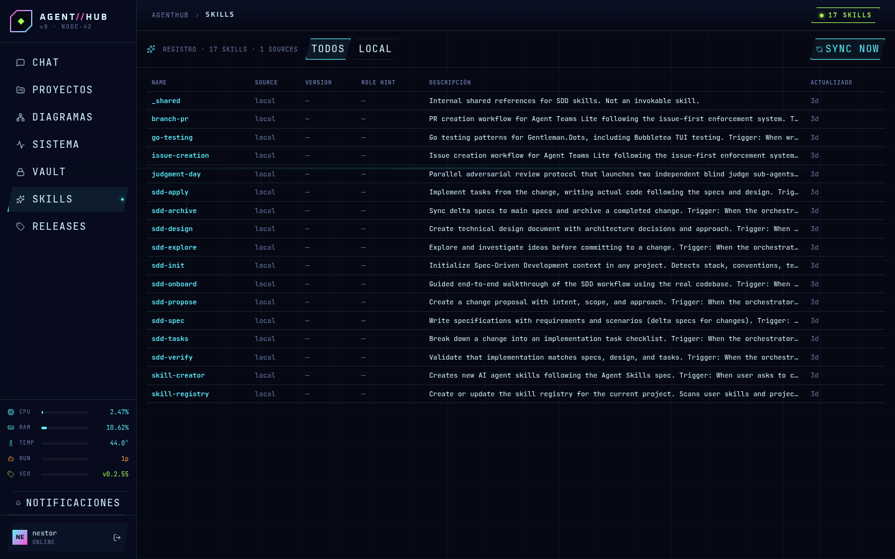
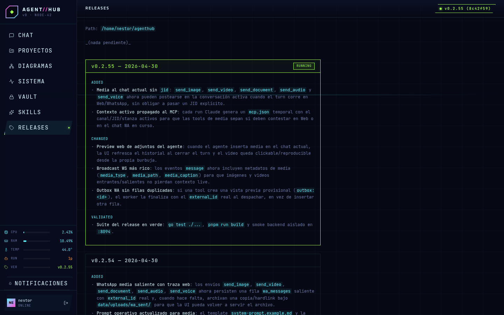
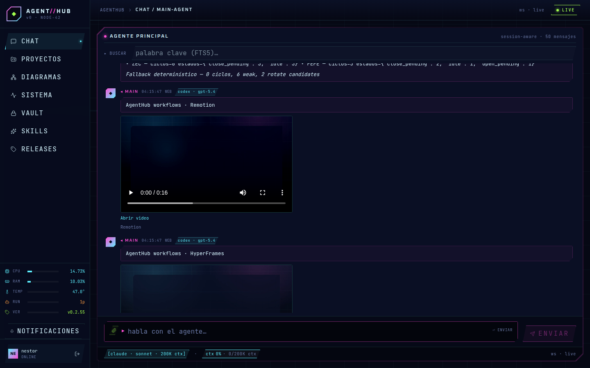

tour visual · funcionamiento real
Cómo funciona AgentHub
Un daemon Go que conecta Web, WhatsApp, engines CLI, tools MCP, SQLite y operaciones locales en un flujo único.
1
cerebro convergido
2
superficies: web + WA
∞
tools y workflows
entrada
Web UI
Chat, proyectos, sistema, vault y skills.
entrada
WhatsApp
Bridge whatsmeow, mensajes y media.
core
AgentHub daemon
HTTP, WS, MCP y orquestación de runs.
persistencia
SQLite WAL
Historial, runtime live, FTS5, vault y outbox.
UI real · chat principal
flujo de entrada
El chat no es solo texto.
Cada mensaje entra por Web o WhatsApp, queda en SQLite y dispara un run con streaming hacia la UI.
Ahora también: si el agente usa
send_video sin JID, el adjunto aparece en este mismo chat como preview clickeable.WS livehistorial FTS5media previewruntime ghosts
diseño de funcionamiento
Qué pasa detrás de un turn
surface
Web Browser
React + Vite + WebSocket.
surface
WhatsApp
whatsmeow + outbox confiable.
core
agenthub daemon
Router HTTP, WS hub, RunTracker, MCP server y workers.
engines
Claude / Codex / Ollama
Procesos hijos con JSON/JSONL.
tools
MCP tools
Vault, sistema, topics, records, media.
salida
Texto + media
Web bubble, WA reply o archivo descargable.
state
SQLite WAL + FTS5
observabilidad y control
La UI también administra el host.
La vista Sistema muestra CPU, RAM, temperatura, servicios systemd, conexiones, procesos y cronjobs del host.
services
restart/start/stop
Solo servicios whitelisted.
cron
read-only primero
La escritura queda para skill con guardrails.
UI real · sistema

trabajo serio
Cada proyecto puede tener su propia sesión.
AgentHub separa conversaciones por workspace, conserva session id, runtime live, engine/model y artefactos.
Skills documentan workflows repetibles: deploy seguro, cron-admin, HyperFrames, SDD y más.
project sessionssafe restartrelease notesskills
projects

skills

releases

salida final
Del razonamiento a una acción visible.
El resultado no tiene que ser solo texto: puede ser un mensaje, un archivo, un video en el chat, un WhatsApp o una operación del sistema.
web
Preview clickeable
MP4 servido desde
/api/file.whatsapp
Outbox confiable
Envía media y luego persiste el external id real.
resultado real

send_video(path, caption) → burbuja playable